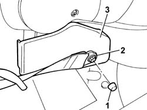

7050A84 BALLJOINT COVER (one) bottom side. of a rear seat with split squab, left or right - R.R .
- Path
- Procedures > 70 FITTINGS > 7050 REAR SEATS > 7050A rear seat assembly > 7050A84 BALLJOINT COVER (one) bottom side. of a rear seat with split squab, left or right - R.R .
- Kind
- repair procedure (removal / refitting; the operation number is the code)
- Applies to
- all engines; all production periods
- Interactive page
- https://sloeber94.github.io/elrnDB-fPnd/en/#/2753281
Applies to: all engines; all production periods
 Removing
Removing
 Refitting
RefittingFold the backrest over using on the release devices.
1. Remove the seat belt cover which is a press fit.
2. Undo the bolt fixing the rear seat belt to the seat.
3. Remove the side joint cover for the rear seat with a split backrest which is a press fit with inner retaining tabs.

Applies to: all engines; all production periods
Refitting
RemovingFit the side joint cover for the rear seat with split backrest, press fitting it.
Tighten the bolt fixing the rear seat belt to the rear seat to torque.
Fit the cover which is a press fit.
Raise the backrest and check that the attachment device is secured to the striker.